Any roof on Earth, scored.
HelioAtlas finds the roofs worth your time, designs them in 3-D, models every hour of the year and turns the result into a proposal your customer signs online.
8,760 hours per designP50 + P90 on every energy figure6 country presets
From orbit to one roof.
Search an address or click a building. Outlines come from a global footprint layer, and the map lands at street level ready to design.
A valley, read roof by roof.
Scan the view and up to 300 of the largest outlines, from 80 m² up, become candidates. Packhouses, cellars, barns and homesteads, each with its own roof size, kWp and yearly energy.
Scored before you drive out.
A first-pass yield on the largest roof sets the scale, and every other roof is scored from its area. The biggest earners light up.
The top fifty, ranked.
Biggest yield first. Click a row and the design starts on that roof.
Open it in 3-D.
Roof faces, setbacks and obstacles. Panels fill the best face first, strings are checked against the inverter, and every hour of the year is modelled.
Prove it. Price it. Sign it.
P50 and P90 energy, the bill before and after, payback and IRR. Then a branded six-page proposal and a link the customer signs.
An address in, a proposal out.
One session in the studio, start to finish: find the roof, lay out the panels, pick the kit, model the year, price it and build the proposal.
One guided flow for every roof.
Six steps on a full-screen satellite map. The same flow designs an 8.6 kWp house and a 301 kWp warehouse.
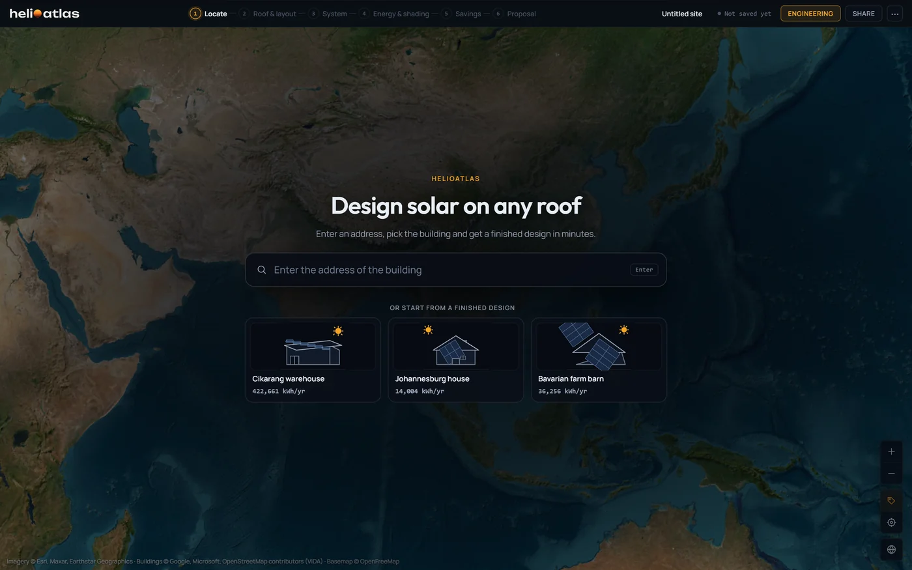
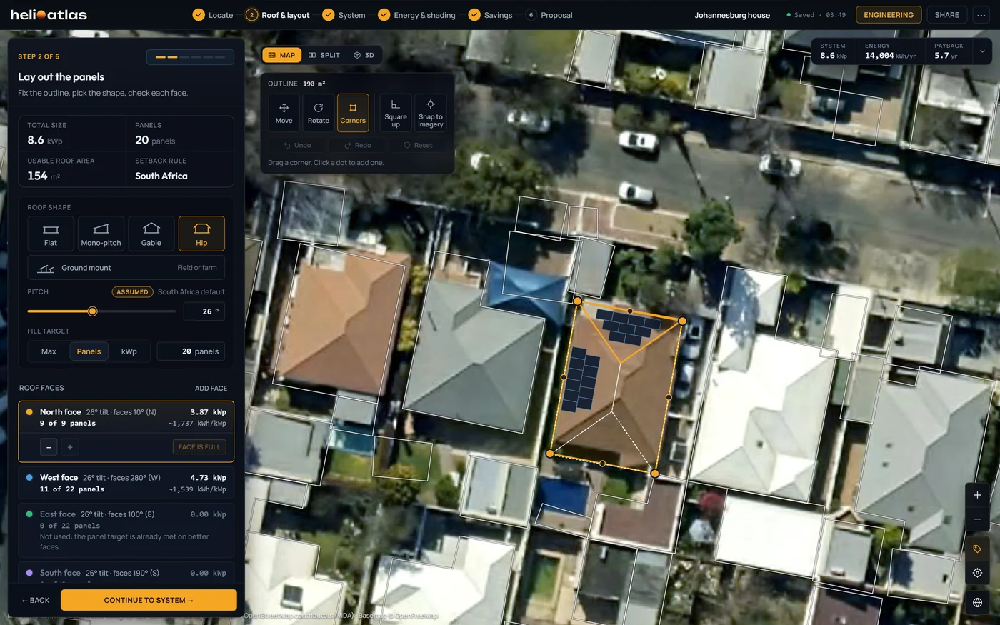
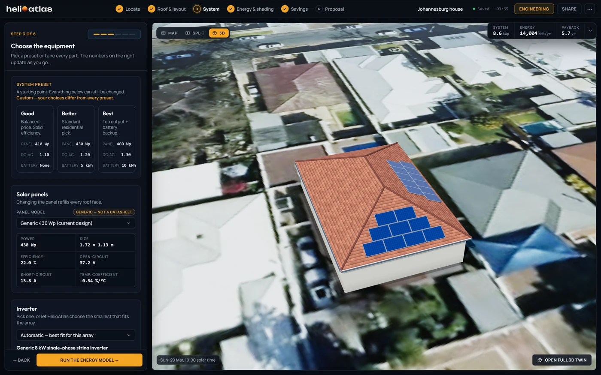
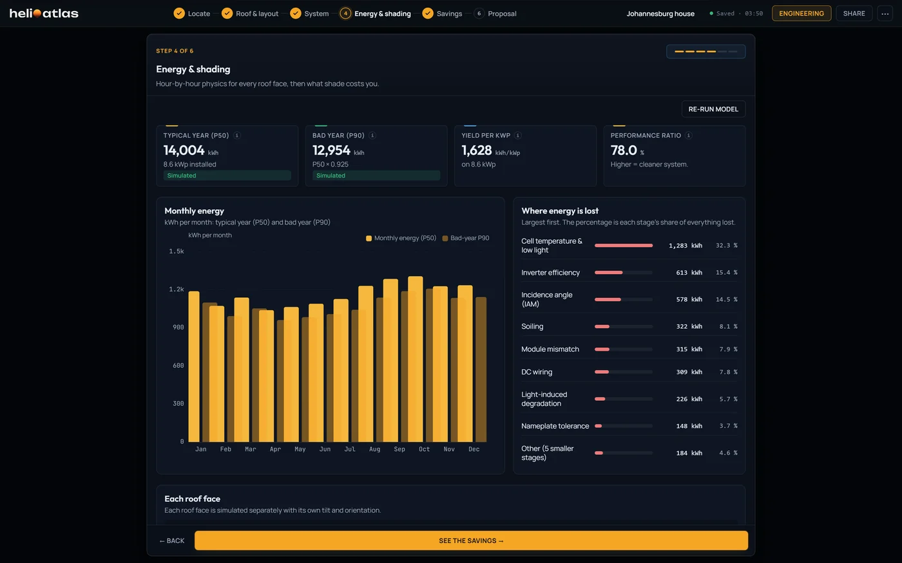
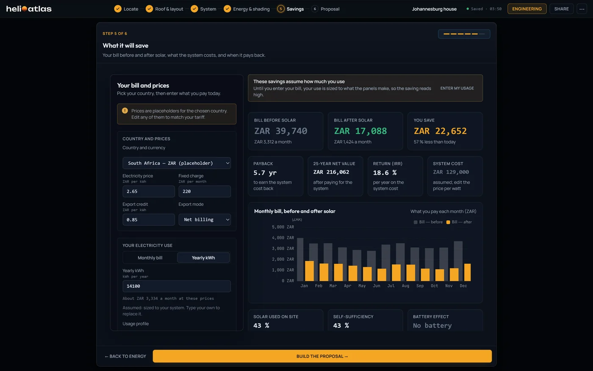
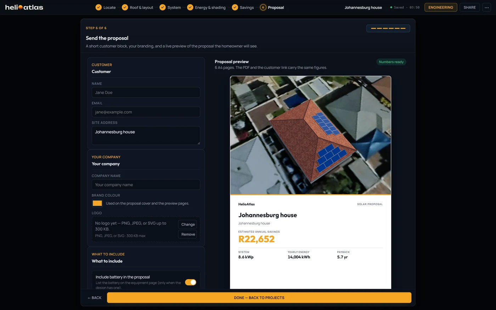
Behind the six steps sits the engineering workbench: 3-D twin, shading, sun path, electrical, energy, storage and report.See the workbench
Three real designs. Their real outputs.
Every account opens with these projects, and they run offline. The figures are the studio's own, unedited; tariffs and prices are country presets, marked assumed.
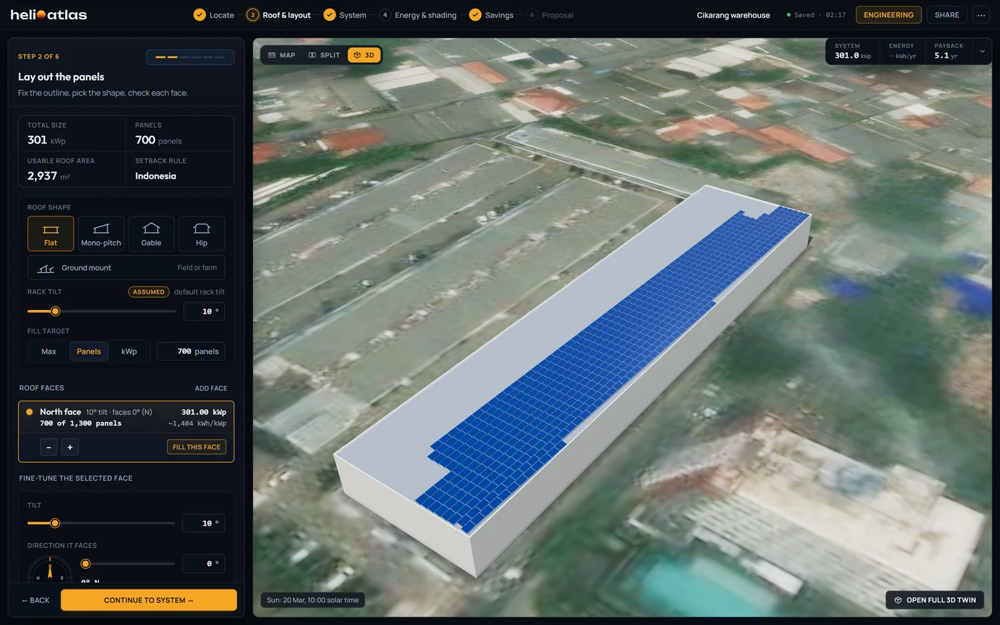
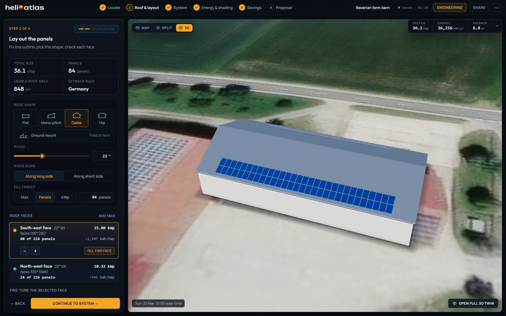
Johannesburg house
Hip roof · 26°South Africa · satellite-derived weather
- System
- 8.6 kWp20 × 430 Wp
- Energy · P90
- 12,954kWh/yr
- Specific yield · PR
- 1,628kWh/kWp · 78.0 %
- Yearly bill, before → after
- ZAR 39,740 → 17,088
- IRR
- 18.6 %
- 25-year net value
- ZAR 216,062
The typical year, and the bad one.
P50 is the typical year. P90 is the year the system beats nine times in ten. The spread comes from the site's own weather record and stated model terms, so a lender sees both.
Modelled spread of yearly energy: a normal distribution around P50 14,004 kWh with sigma 5.85 percent. P90 is 12,954 kWh; nine years in ten reach it.
- Weather resource
- 4 %satellite-derived
- Year to year
- measuredsite record
- Model
- 3 %
- Geometry
- 1 %
- Degradation
- 0.2 %
- Combined, σ
- 5.85 %
Terms combine as a root sum of squares; reanalysis sites carry 8 % for the resource. Payback and savings are worked from P50.
How P90 is builtSix pages, signed online.
Your logo and colour on an A4 proposal built from the design. Each one carries a valid-until date and says it is a design estimate, not a quotation.
- The customer signs with
- name, email, tick
- The server stamps
- time, SHA-256
- A second signature
- refused
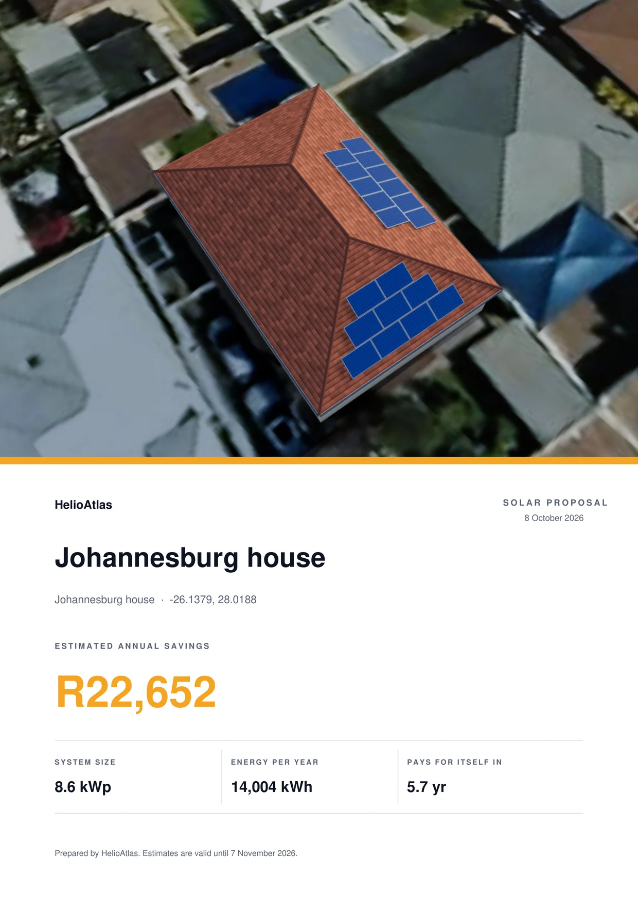
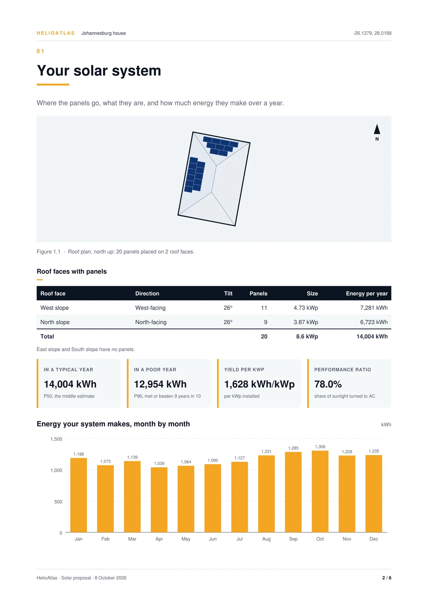
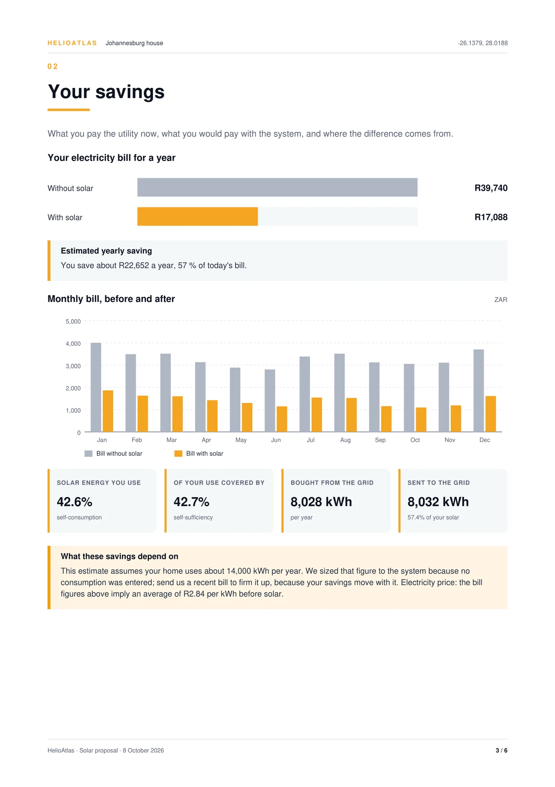
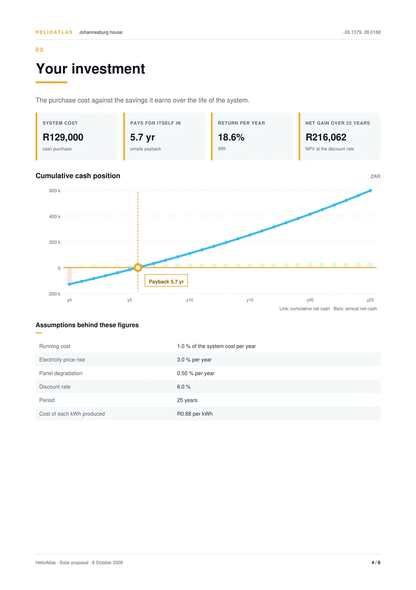
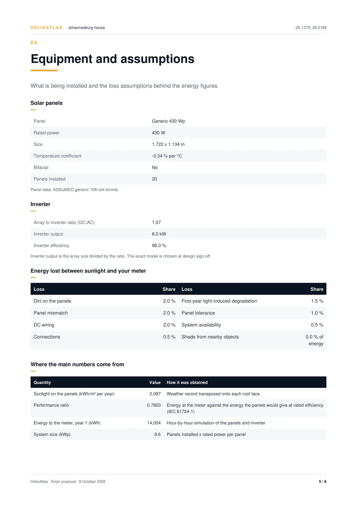
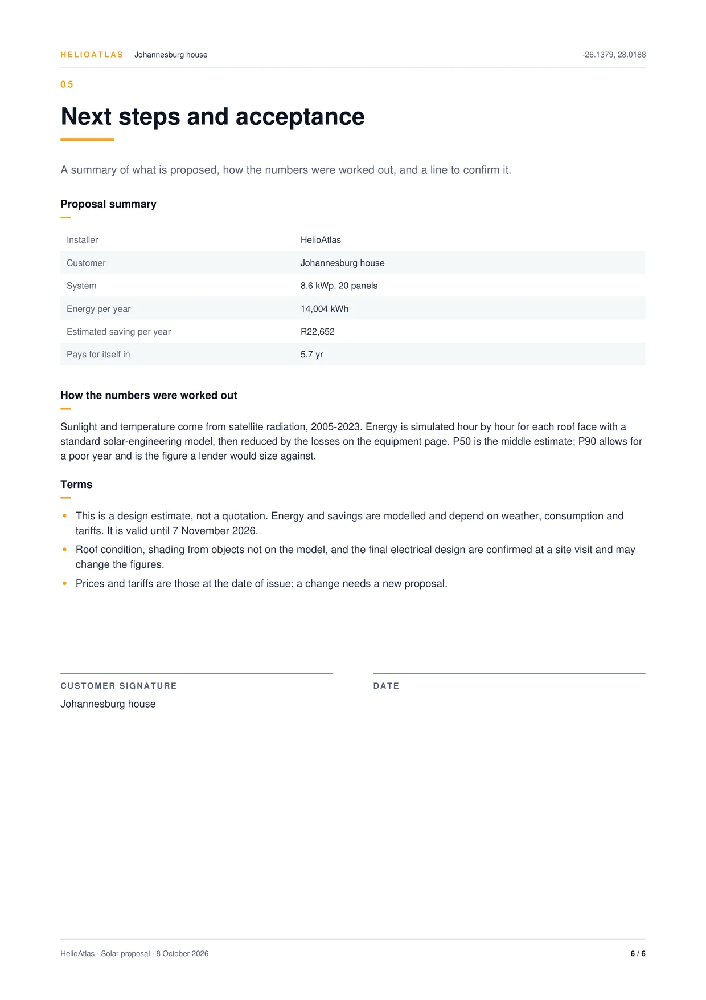
Find the next roof worth your time.
Request access to the studio, or book a demo and watch the full flow run on the three example projects.